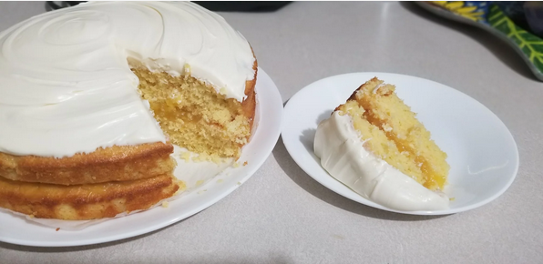

Whole Lemon Layer Cake

Description
This layer cake has strong lemony flavor without a sticky syrup drizzle.
Ingredients
- 2 organic Meyer lemons, scrubbed
- 2 ¼ cups all-purpose flour
- 1 ½ cups white sugar
-
½ cup unsalted butter, at room temperature, cut into 1-inch pieces
- 1 tablespoon baking powder
- ¼ teaspoon salt
- 4 large eggs, lightly beaten
- 1 tablespoon limoncello liqueur (Optional)
- ½ cup lemon curd
- 2 cups cream cheese frosting
Steps
-
Place Meyer lemons in a 2-quart saucepan with 4 cups water. Bring to a
boil over high heat. Reduce heat and cover; simmer lemons until soft,
about 25 minutes. Remove from heat and cool completely.
-
Preheat the oven to 350 degrees F (175 degrees C). Lightly grease two
9-inch cake pans, line the bottoms with parchment paper, and lightly
grease the parchment paper.
-
Remove any stems from the lemons. Slice into quarters and remove all
seeds.
-
Place the lemon quarters in the work bowl of a large food processor and
process until fairly smooth, about 30 seconds. Add flour, sugar, butter,
baking powder, and salt. Pulse about 10 times, just until the batter
comes together into coarse crumbs with flecks of lemon rind. Pour in
eggs and limoncello with the motor running; process until a thick,
slightly grainy batter forms, 10 seconds or less.
- Divide batter between the prepared pans.
-
Bake in the preheated oven until the tops are light gold and spring back
lightly to the touch, and a toothpick inserted into the middle of each
cake comes out clean, 20 to 23 minutes. Cool in the pans for about 5
minutes, then remove and finish cooling on baking racks.
-
Place 1 cake layer on a cake plate and cover with lemon curd. Top with
the second layer and frost just the top, or top and sides, with cream
cheese frosting.